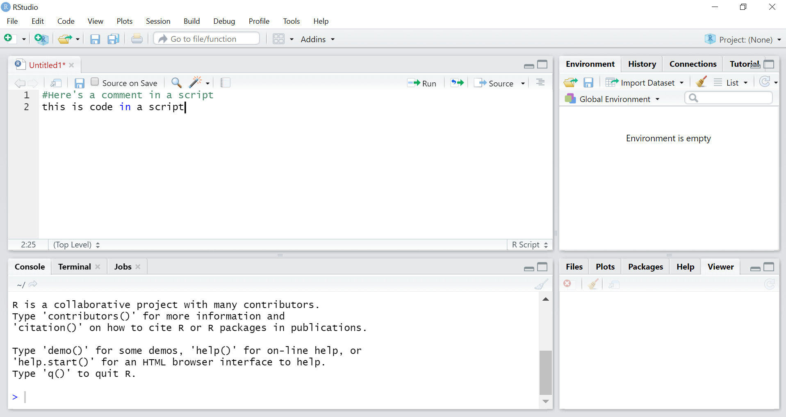

Prequisites: R for data wrangling
Michael D. Garber, PhD MPH
Revised June 2, 2022
This page motivates the use of R and describes some preliminary concepts and steps before we begin with the sessions on data wrangling and visualization.
1 What is R?
According to the R website, R is “a free software environment for statistical computing and graphics.” Its hashtag on Twitter is #RStats, but, as some have alluded to, R can do much more than statistics. For example, it can make maps, create websites, and, importantly, manipulate data.
Aside: I don’t view the manipulation and analysis of data (creating variables, counting things, putting things in groups, etc.) as necessarily within the realm of statistics per se, unless I intend to infer the results of that analysis to a larger or separate population.
Definitions of statistics aside, the point is that R is a programming language that allows you to perform most any data-manipulation, data-analysis, or data-visualization task (including statistics).
2 Why R?
Why should we use R for manipulating and analyzing data?
2.1 R vs point-and-click data-analysis tools like Excel and ArcGIS
This post by Jesse Adler (a digital historian) is a well-written overview of the advantages of using a programming language like R to manipulate and analyze data rather than spreadsheet tools like Excel. Summarizing their post with another on the topic, here are the top four advantages of programming:
Every step is written down, so it’s easier to find and fix errors.
Easier to repeat analysis steps: suppose you realize you want to make a change upstream in your analysis that affects everything downstream of it. In R, this is straightforward: simply make the change, and rerun all of the code that relies upon it (and possibly make some changes to the downstream code to accommodate that change as needed). In a point-and-click interface like Excel or ArcGIS, you may have to repeat several point-and-click steps, which would take longer and be more prone to error.
There is a clear division between data entry and data manipulation and analysis: it’s easier to avoid the temptation of editing the raw data. Although you can certainly make a copy of raw data in Excel, it can be tempting to edit the raw data.
Easier to automate similar tasks. The ability to automate analysis steps becomes especially important for bootstrapping where we effectively repeat the analysis steps hundreds of time while allowing some of the steps to randomly vary. This would be much more challenging in Excel.
To be clear, I think Excel is great, too. I use it often for simple analyses or for data entry. But I don’t use it as much as I once did for more involved analyses.
2.2 Why R vs SAS, STATA, and Python?
Okay, but there are other programming tools for data analysis (e.g., SAS, STATA, Python). Why R, specifically?
- It’s free. SAS and STATA cost money.
- It has an active, helpful, and friendly user community. Googling a topic along with “R” often leads to useful public discussion on forums like stackoverflow or RStudio community.
- It can manipulate spatial data and make maps. No need to switch software for GIS.
- Having used SAS for years, I personally think R is simply more fun.
- As noted above, R can do a lot of cool stuff. For example, with RMarkdown, you can make websites like this one, create interactive dashboards, and do lots more amazing talk by RMarkdown creator).
I know many people use and like Python, which is also free and shares many of R’s advantages. I don’t have much Python experience, so I can’t really comment on it. Every now and then, I encounter a situation where I wish I had some Python skills (e.g., to use this package to compute measures on street networks from OpenStreetMap), but those situations are rare.
3 Install R and RStudio and become familiar with the user interface.
- Install R and RStudio. R can be used as a stand-alone program, but RStudio (an IDE) adds several helpful features that make coding in R easier.
- To download R, go to CRAN and download R from the location nearest you: https://cran.r-project.org/mirrors.html.
- Then, install RStudio Desktop (the free version) at this link: https://rstudio.com/products/rstudio/download .
The Appendix of this free online book - Hands-On Programming with R, by Garrett Grolemund - explains why both R and RStudio should be downloaded.
- Familiarize yourself with the RStudio interface. There are a few ways to write code in R, including.
Using a script. I almost always write code using a script, which is essentially a text file that can be saved and edited as you would a Word document.
Using RMarkdown is another option. I made this web page using RMarkdown. It allows the author to include free text, code, and the code’s results in one streamlined document. RMarkdown is well-suited for something that will be presented (to someone besides yourself) and in my opinion is not the best choice for a typical data-analysis workflow, where I prefer scripts for their simplicity.
Using the console. Finally, if you just want to do a very basic task or calculation without creating a new file, you can type code in the console. I almost never do that.
The book by Grolemund provides an overview of RStudio’s user interface.
Here’s a screenshot of what the script window might look like:

4 Install and use some packages
Two often-quoted slogans describing R are that:
“Everything that exists is an object.”
“Everything that happens is a function.”
So, at its core, when using R, you are using functions to do things to objects. R comes pre-loaded with a set of functions that can be used to analyze data. This is called “base R” and is the foundation upon which everything else in R is built.
Many widely used functions, however, are not a part of base R but are rather part of a package. Packages are collections of functions with related goals. They can also include data and documentation as part of the bundle. For example, dplyr is a package of functions with a common philosophy for manipulating data, and it includes some demo datasets.
4.1 Install a package
Using a package requires first installing it with the install.packages("package_name") function and then loading it using the library(package_name) function. Note the absence of quotes when loading a package (library(package_name). There is some stackoverflow discussion on whether to use quotes when loading packages. In my experience, it works better to not use quotes when loading packages but to use them when installing packages.
For this exercise, let’s install the full tidyverse. The tidyverse is a unique package in that it is a collection of packages, one of which is dplyr.
So here is our first code chunk to run:
install.packages("tidyverse")To run the code, put your cursor on that line or highlight that line of code, and then click the Run button above and to the right of the scripts window pane.
On Windows, the keyboard shortcut for Run is control+enter. On a Mac, it’s command+enter (return).
In my experience, it’s usually fine to let R pick where it installs the packages on your computer. This may depend on whether you’re using your own computer or, say, a work computer with limited access to certain drives. If needed, you can specify where you want the package to land by adding the lib= "file path" argument in the install.packages() function. For example: install.packages("tidyverse", lib = "file-path").
4.2 Load the package
Now that the package is installed, load it using the library() function (no quotes). Loading the package tells R to make the functions of the package available for your current work session.
library(tidyverse)5 Here, here, a word on working directories and projects
5.1 Here package and projects
The folder in which R reads (loads) and writes (saves) files is called the working directory. For years, I had set the working directory by typing the entire file path. This is not ideal practice for a few of reasons:
- It takes a long time to type a long file path.
- Typing file paths is error prone.
- It’s hard-coded: If you were to change computers or share your code with someone, those working directories won’t work.
Fortunately, there’s a very simple solution to these issues: Use the here package. This package creates paths relative to the location of the R project you are working in. This means that wherever your project is in the folder structure of your computer, the here() function to define your working directory and thus any read/write commands that rely on it will just work.
(Jenny Bryan’s ode to the here package is worth a read.)
What is a project? A project is an RStudio file associated with a working directory that makes it easy to keep all code, data, and other documents in one place on your computer. To write this course, I created a project called teach-r.

Note that all of folders in the same folder as the .Rproj file will conveniently appear in the “Files” tab.
You don’t have to use projects to use R or RStudio, but I think it’s a good idea, in part because of how well projects pair with the here package. RStudio projects also integrate nicely with GitHub for version control and code sharing (as for this course).
5.2 Example: save a variant of dplyr’s cars dataset to a working directory set with here
Install and load the here package.
install.packages("here")library(here) #load package.## here() starts at /Users/michaeldgarber/Dropbox/Work/teach/teach-rUse getwd, which is a base R command, to check the working directory:
getwd() #base R## [1] "/Users/michaeldgarber/Dropbox/Work/teach/teach-r/docs"Example:
Fortunately,
I used R for several years without using here() and I wish I had learned about this package earlier. It’s fantastic.
The problems it solves:
1. Typing the full working directory of your having to type the full file path every time you 2. If you were to change computers or share your code with someone, those file paths would almost certainly not work anymore. The Here makes the working directory relative to the project, so it will work wherever the project is.
It’s a simple function that calls your file
Jenny Bryan, educator at RStudio, loves the here package as well. Her explanation for why is worth a read.
Copyright © 2022 Michael D. Garber